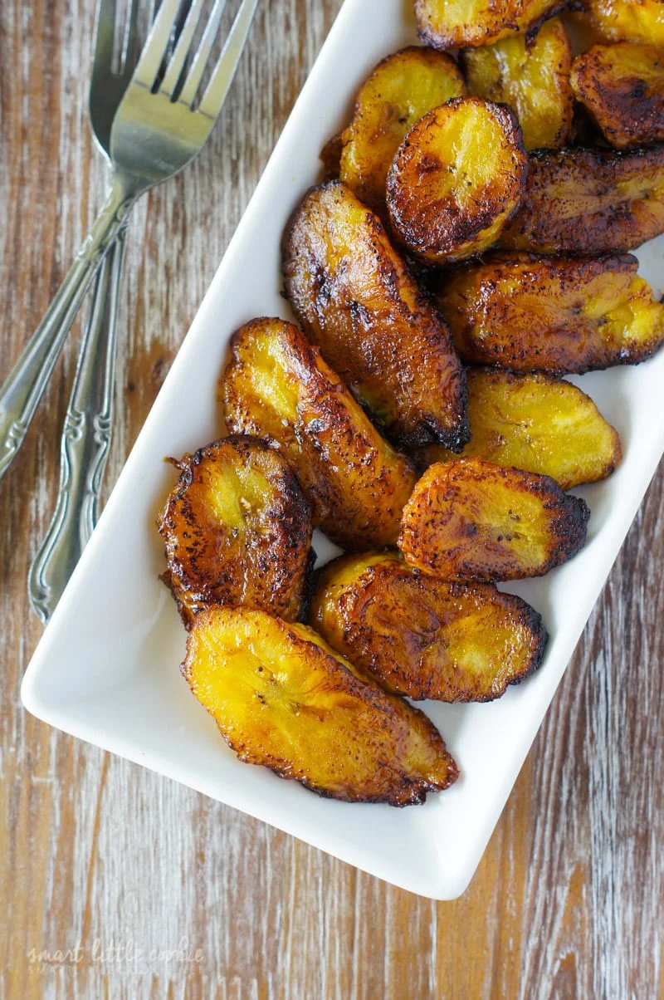

Maduros

Description
Maduros are fried sweet plantain slices. They are sweet and delicious!
Ingredients
- Ripe, brown and yellow plantains
- Vegetable oil
- Salt
Steps
- Peel and slice the ripe plantains
- Fry in vegetable oil until cooked through and golden on both sides
The more ripe your plantains, the sweeter they will be. green = savory, yellow = sweet, brown = sweetest